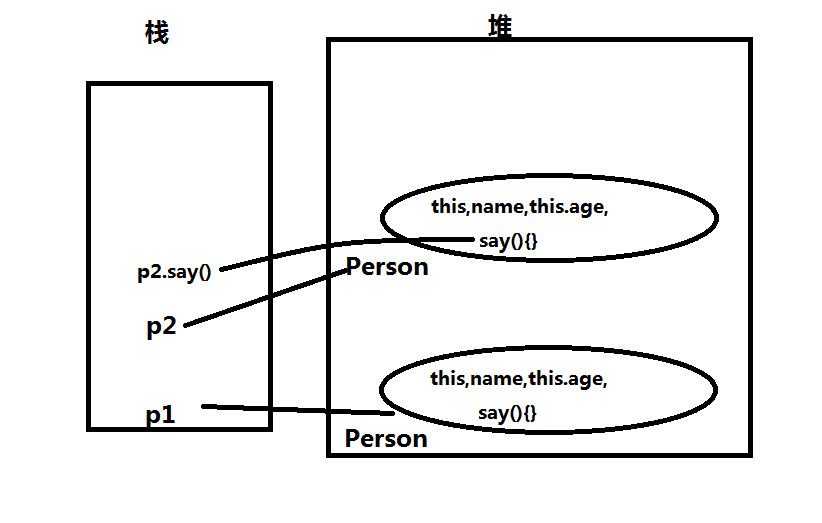

练习：
1.画图分析内存 重点new一个对象到底干了什么 function Person(name){this.name=name;this.age=age;this.say(){}} var p1=new Person("cjy",33); p.say();var p2=new Person("cjy1",43);p2.say();

2.prototype干什么用的
prototype原型属性是个指针，指向该类的所有实例共享的属性和方法
3.写MyArray类 构造函数function MyArray(...ele) { this.datas=[...ele];this.size=this.datas.length;} MyArray.prototype.at(index)=size>0?datas[index]:-1; MyArray.prototype.every(callback); MyArray.prototype.map(callback); MyArray.prototype.filter(callback);